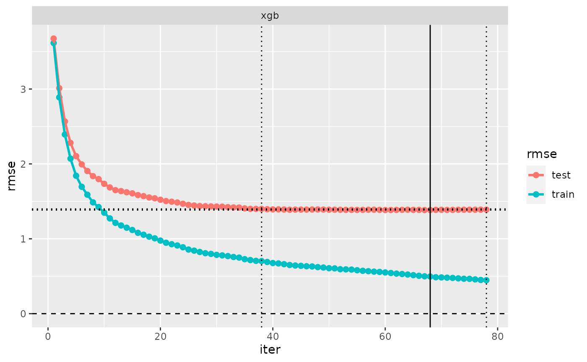

Set, extract and expand preference criteria for a “cv” object for iteratively fitted models
set_iter.Rdset_iter() modifies a “cv” object by altering its preferences with respect to iterations,
without re-running the cross-validation.
extract_iter() extracts the information on preferred iterations from a “cv” object.
expand_iter() converts a “cv” object with multiple preferred iterations to a “cv” object
having several (identical) models, but different preferred iterations.
Usage
set_iter(x, iter, ...)
# S3 method for cv
set_iter(
x,
iter,
which = label.cv(x),
label = label.cv(x),
keep_all = TRUE,
...
)
extract_iter(x, ...)
expand_iter(x, iter = NULL, which = label.cv(x))
# S3 method for model
set_iter(x, ...)
# S3 method for model_fm_xgb
set_iter(x, iter, verbose = TRUE, warn = TRUE, ...)
# S3 method for model_fm_glmnet
set_iter(x, iter, lambda = NULL, verbose = TRUE, warn = TRUE, ...)Arguments
- x
A cross-validated model, of class “cv”, based on an iteratively fitted model (IFM, see ifm). In
set_iter(),xcan also be a model being based on an IFM.- iter
If
xis a “cv”: A criterion (seecrit_iter, multiple criteria not allowed).
Ifxis a “model”: An integer value; if model has cross-validation information,iteris not required and the preferred iteration will be selected; otherwiseiteris required.- ...
Arguments passed to methods.
- which
Character, integer or logical vector specifying the cross-validated models to be modified or expanded.
- label
labelof output object.- keep_all
Logical: If
TRUE, all preference criteria are kept, ifFALSE, only the selected one (only relevant if there is more than one preference criterion).- verbose
Logical: Show information on modified arguments?
- warn
Logical: Whether to issue a warning when information for parameter setting is not possible.
- lambda
Vector lambda (of decreasing numeric values) to pass to
glmnet().
Examples
d <- simuldat(n = 5000)
m <- model("fm_xgb", Y ~ ., d, nrounds = 200, class = "fm_xgb",
label = "xgb")
cvm <- cv(m, iter = c(crit_min(), crit_last(), crit_overfit(.5)),
nfold = .3)
print(cvm, what = "call")
#> --- A “cv” object containing 1 validated model ---
#>
#> Validation procedure: Simple Hold-out Validation
#> Number of obs in data: 5000
#> Number of test sets: 1
#> Size of test set: 1500
#> Size of training set: 3500
#>
#> Model:
#>
#> ‘xgb’:
#> metric: rmse
#> call: fm_xgb(formula = Y ~ ., data = data, nrounds = 200)
#>
#> Preferred iterations:
#> model ‘xgb’: min (iter=68), last (iter=78),
#> overfit0.5 (iter=38)
extract_iter(cvm)
#> Error in extract_iter(cvm): could not find function "extract_iter"
cv_performance(cvm)
#> --- Performance table ---
#> Metric: rmse
#> train_rmse test_rmse iteration time_cv
#> xgb 0.49601 1.3836 68 0.554
plot(evaluation_log(cvm))

# set_iter
cvm_last <- set_iter(cvm, crit_last(), label = "xgb_last")
#> Error in set_iter(cvm, crit_last(), label = "xgb_last"): could not find function "set_iter"
cv_performance(c(cvm, cvm_last))
#> Error in eval(expr, envir, enclos): object 'cvm_last' not found
# expand_iter
cvm_expanded <- expand_iter(cvm)
#> Error in expand_iter(cvm): could not find function "expand_iter"
print(cvm_expanded, what = c("call"))
#> Error in eval(expr, envir, enclos): object 'cvm_expanded' not found
cv_performance(cvm_expanded)
#> Error in eval(expr, envir, enclos): object 'cvm_expanded' not found
plot(evaluation_log(cvm_expanded))
#> Error in eval(expr, envir, enclos): object 'cvm_expanded' not found